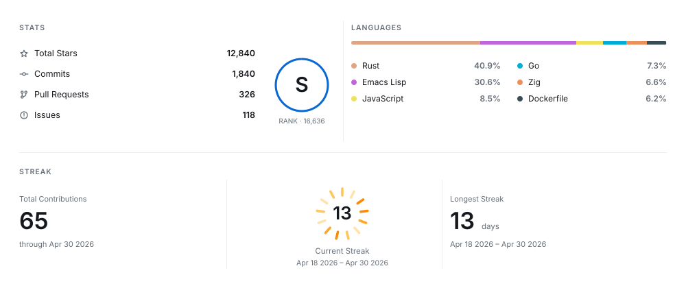
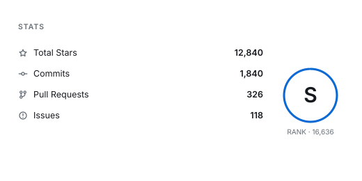
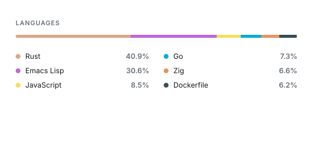
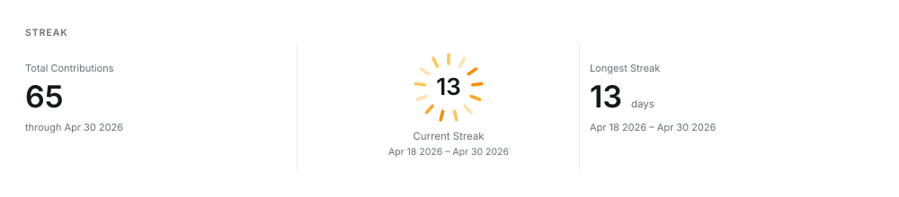
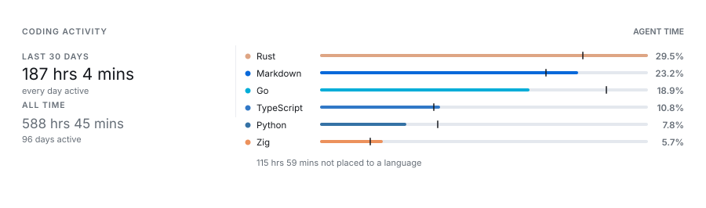

Your profile, drawn once
and read anywhere
One SVG for your GitHub stats, language share, contributions, and streak — laid out by the renderer, so your README does not have to fight tables, image heights, or fragile HTML alignment.
Runs as a GitHub Action, a local command, or a small service. Light, dark, and transparent themes. Tiles that reflow on a phone.

What it draws



And how the work was actually done
Your profile knows what you pushed and nothing about how it came to be. A second half reads that from records your own machine already keeps: how long the work took, how much of it an agent wrote, and which models did. No account with anybody, no service in the cloud, and no token to render it.

The same record reads as text, for a README made of words rather than pictures:
LINES BY LANGUAGE
Total +115,987 lines, 99.94% by an agent
Rust +34,255 ######################### 29.53 %
Markdown +26,925 ####################----- 23.21 %
Go +21,869 ################--------- 18.85 %Documentation
Getting started
Install it as an action, a command, or a service, and see a card.
Cards and layout
Every card, how to place them in a README, and how a row behaves on a phone.
Configuration
What each panel reports, and which repositories count towards a language.
The heat ring
The window it covers, the shape it takes, how it is scaled, and what sits in the middle.
Themes and colour
Light, dark, and transparent, and why a ramp cannot serve both surfaces unchanged.
Coding activity
How long the work took, what wrote it, and which models did — as a card or a chart.
Collecting it
The collector, the daemon, the editor extension, and where your record is kept.
Private repository data
Counting work that is not public, with a token scoped to just that.
One fetch behind every tile
Read a profile once, save it, then draw every card, theme, and width from what was saved. A README with five tiles asks GitHub for nothing five times.
github-personal-stats fetch --user your-login --output profile.json
github-personal-stats generate --fixture profile.json --card stats --output stats.svg
github-personal-stats generate --fixture profile.json --card heat --output heat.svg